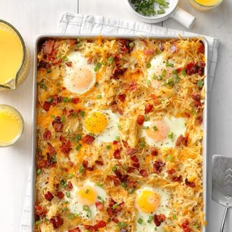

Sheet pan eggs and bacon

Ingredients:
- 10 bacon strips
- 1 package (30 ounces) frozen shredded hash brown potatoes, thawed
- 1 teaspoon garlic powder
- 1 teaspoon dried basil
- 1 teaspoon dried oregano
- 1/2 teaspoon salt
- 1/2 teaspoon crushed red pepper flakes
- 1-1/2 cups shredded pepper jack cheese
- 1 cup shredded cheddar cheese
- 8 large eggs
- 1/4 teaspoon pepper
- 1/4 cup chopped green onions
Steps:
- Preheat oven to 400 degree's F. Place bacon in a single layer in a 15x10x1-in. baking sheet. Bake until partially cooked but not crisp, about 10 minutes. Remove to paper towels to drain. When cool enough to handle, chop bacon.
- In a large bowl, combine potatoes and seasonings; spread evenly into drippings in pan. Bake until golden brown, 25-30 minutes
- Sprinkle with cheeses. With the back of a spoon, make 8 wells in potato mixture. Break 1 egg in each well; sprinkle with pepper and bacon. Bake until egg whites are completely set and yolks begin to thicken but are not hard, 12-14 minutes. Sprinkle with green onion.
1 serving: 446 calories, 30g fat (13g saturated fat), 246mg cholesterol, 695mg sodium, 22g carbohydrate (2g sugars, 1g fiber), 22g protein.